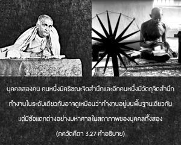
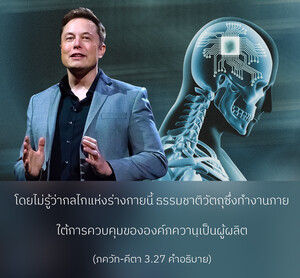

จิตวิญญาณเกิดสับสนอันเนื่องมาจากอิทธิพลของอหังการที่คิดว่าตนเองเป็นผู้กระทำกิจกรรมทั้งหลาย แท้ที่จริงสามระดับแห่งธรรมชาติวัตถุเป็นผู้นำพาไป


มีบุคคลอยู่สองคน คนหนึ่งมีกฺฤษฺณจิตสำนึก และอีกคนหนึ่งมีวัตถุจิตสำนึกที่ทำงานในระดับเดียวกัน อาจดูเหมือนว่าพวกเขาทำงานอยู่บนพื้นฐานเดียวกัน แต่มีข้อแตกต่างอย่างมหาศาลในสถานภาพของบุคคลทั้งสอง บุคคลในวัตถุจิตสำนึกมีความมั่นใจด้วยอหังการว่าตนเองเป็นผู้กระทำทุกสิ่งทุกอย่าง โดยไม่รู้ว่ากลไกแห่งร่างกายนี้ธรรมชาติวัตถุซึ่งทำงานภายใต้การควบคุมขององค์ภควานฺเป็นผู้ผลิต นักวัตถุนิยมไม่รู้ว่าในที่สุดตัวเขาเองก็อยู่ภายใต้การควบคุมขององค์กฺฤษฺณ บุคคลผู้อยู่ภายใต้อหังการจะรับเอาเกียรติยศชื่อเสียงทั้งหมดในการทำทุกสิ่งโดยเอกเทศ และนี่คือลักษณะอาการแห่งอวิชชา โดยไม่รู้ว่าร่างกายทั้งหยาบและละเอียดของเขานี้ธรรมชาติวัตถุนั้นเป็นผู้สร้าง ภายใต้คำสั่งขององค์ภควานฺ เมื่อเป็นเช่นนี้กิจกรรมของร่างกายและจิตใจของเขาควรทำไปเพื่อรับใช้องค์กฺฤษฺณในกฺฤษฺณจิตสำนึก ผู้อยู่ในอวิชชาลืมไปว่าบุคลิกภาพสูงสุดแห่งพระเจ้าทรงพระนามว่า หฺฤษีเกศ หรือเจ้านายของประสาทสัมผัสแห่งร่างวัตถุ เนื่องจากการใช้ประสาทสัมผัสไปในทางที่ผิดเพื่อสนองประสาทสัมผัสของตนเองเป็นเวลายาวนาน เขาจึงเกิดสับสนอย่างจริงจังจากอหังการซึ่งทำให้ลืมความสัมพันธ์นิรันดรกับองค์กฺฤษฺณ